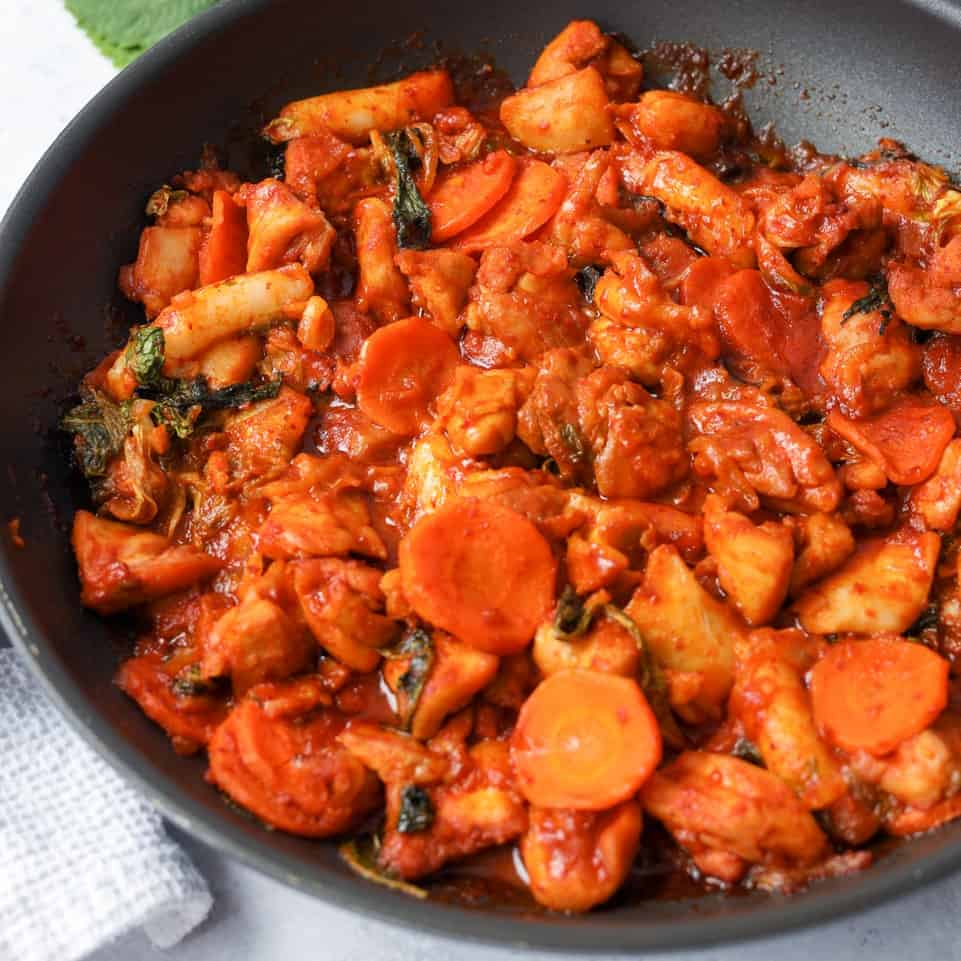

Dak Galbi
Home

Dak galbi or dakgalbi (닭갈비, Korean spicy chicken stir fry) is by far my all time favorite Korean dish. dak galbi / dakgalbi (닭갈비) is spicy chicken stir fried in a large pan, which is often a cast iron pan. Chopped chicken is marinated in a mix of spicy Korean sauce then stir fried with rice cakes, sweet potatoes, green cabbage, and perilla leaves..
Ingredients
Main Ingredients
- Chicken Thigh
- Medium Sweet Potato
- Carrot
- Cabbage
- Korean Perilla Leaves
- Korean Rice Cakes
- Cooking Oil
Sauce Ingredients
- Gochujang
- Mirin
- Gochugaru
- Soy Sauce
- Raw Sugar
- Minced Garlic
- Minced Ginger
- Korean Curry Powder
- Small Onion, Minced or Grated
Steps
- Combine all marinade ingredients in a bowl and mix well.
- Pour sauce over chicken and marinate.
- Preheat a large skillet on medium high heat.
- Add cooking oil.
- Add ingredients and cook until fully cooked.
- Serve with rice.